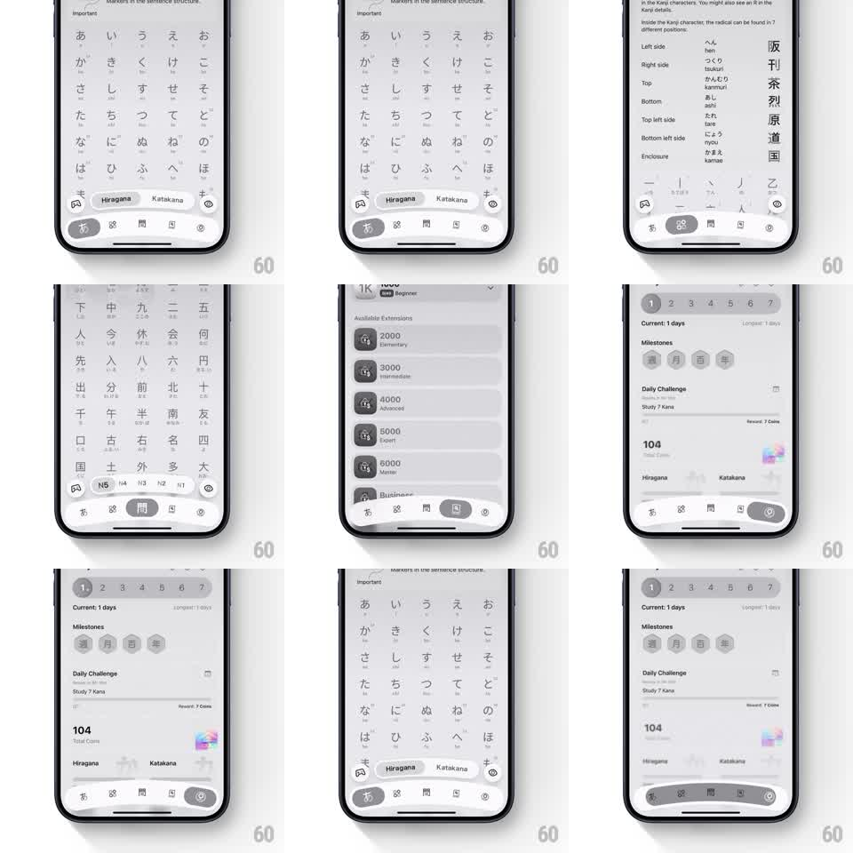

Media
Frame-by-frame

Rebuild this interaction 1:1: Kann's tab bar - the active tab's indicator blob slides between tabs with an elastic wobble inside a curved floating bottom bar.

Rebuild this interaction 1:1: Kann's tab bar - the active tab's indicator blob slides between tabs with an elastic wobble inside a curved floating bottom bar. ## Integration Integration: stack-agnostic spec - springs given as stiffness/damping, timed motions as duration + curve; map every value to your framework and animation library of choice. ## Scene Japanese-learning app screens (kana grids, kanji lists, extension cards, milestone page) over a floating bottom tab bar: a dark rounded bar with a curved top edge, four icons, and a tinted pill/blob behind the active icon. ## Motion spec Pattern: elastic sliding indicator, ~600ms. - On tab change, the active blob slides to the new icon (spring stiffness 240 damping 14), stretching wide mid-travel (scaleX to 1.6) and wobbling as it lands (two visible oscillations). - The newly active icon bounces upward into the blob (translateY -4px and back, spring stiffness 400 damping 14) and tints to the blob's contrast color. - The old icon drops back to rest on the same beat (200ms, ease-out). - The page content crossfades (250ms) under the bar; the bar itself never moves. - The bar's curved top edge keeps its shape constant - only the blob inside deforms. ## Calibration - The wobble is the personality: underdamped enough to see two bounces, not so loose it feels broken. - The stretch aligns with travel direction and relaxes before the landing. ## Reduced motion Indicator fades between positions. ## Don't miss - The blob is wider than the icon and hugs the bar's curvature - it reads as liquid inside the bar, not a rectangle. - The icon's upward bounce is timed to the blob's arrival, not the tap.